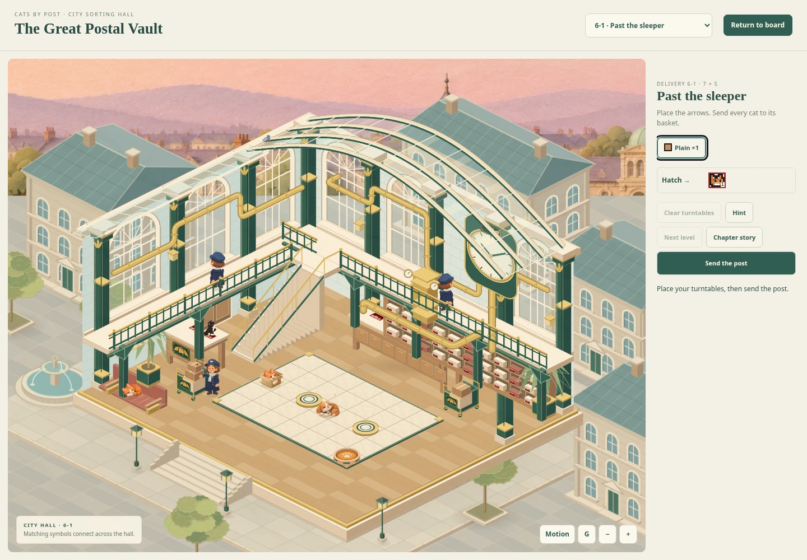
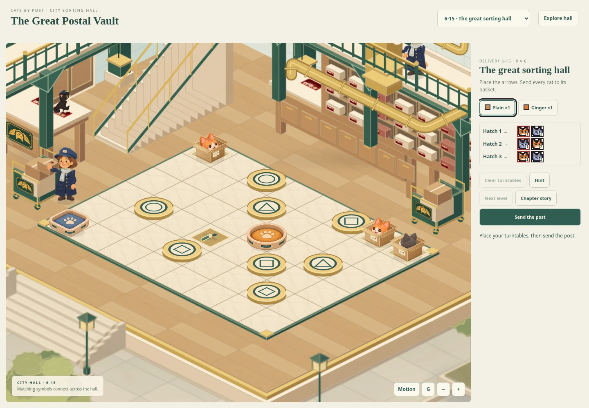
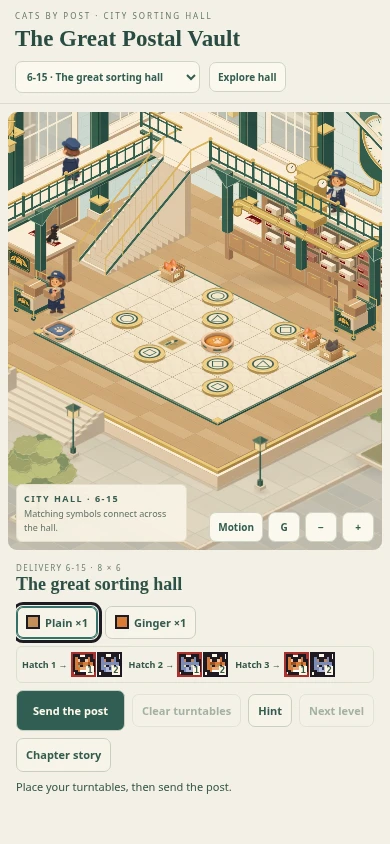
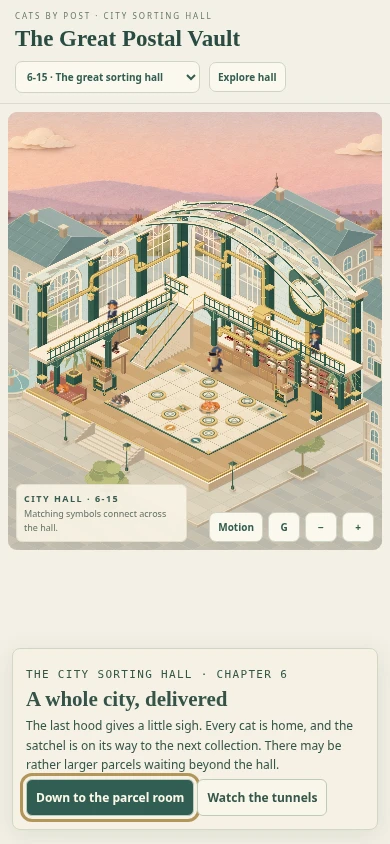
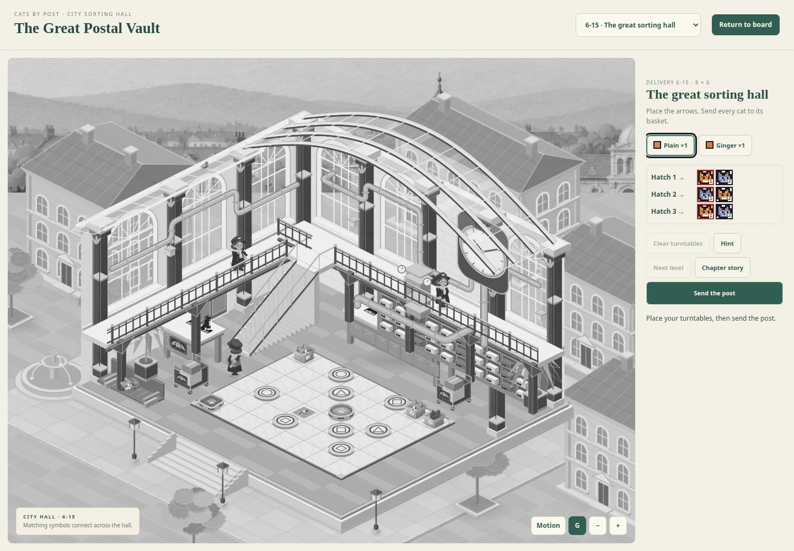

Cats by Post · City Hall
The Great Postal Vault
The selected curved vault, measured in the game's original 2:1 projection, with a connected civic square, neighbouring buildings and the same distant skyline through every window.

Actual Chromium capture · whole hall · 1440×1000 viewport.

Actual 6-15 board · all four symbol pairs and three hatches.

390×844 phone viewport with all ordered hatch queues; pinch zoom available.
Actual departure card and full hall in portrait.
Grayscale hierarchy and symbol identity.
Motion samples
Recorded from the real Canvas with deterministic clocks. These clips are visual evidence, not device-performance measurements.
48-second ambient loop: parcel pickup and release, original staff routes, trolley wheels, Postmistress and a single ginger cat's outing and return.
Actual shared three-cat teaching trace: local tunnel entry/exit, dog bounce, points and edge flap.
Canonical final satchel dispatch; the completed puzzle remains intact.
Cloud Chromium only. Physical iPhone/Safari, sustained frame rate, thermal behavior and production-manager integration remain unqualified.